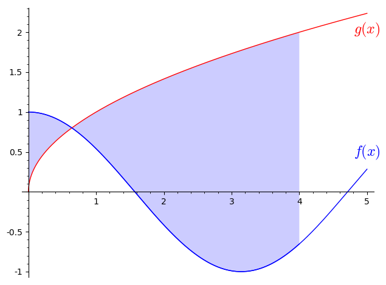

11Course week 10
11.1 Readings
Read sections 10.1-10.4 in the textbook.11.2 Notes
Definitions
The indefinite integral:
The definite integral:
General rules
11.3 Problems
Find the following indefinite integral:
Find the following indefinite integral:
Find the following indefinite integral:
Find the following indefinite integral:
Then, find the following definite integral:
You are attending a UN climate summit and have been asked to match mathematical expressions to sentences describing the same thing.Let denote the Earth's total emissions i the year measured in millions of tonnes.If the Earth's total emissions of in the year 2022 is 10,000 million tonnes, this means that
.Connect the expressions below with the corresponding mathematical expressions by dragging them into the empty boxes.
a) emissions were higher in 2000 than in 2010: b) emissions peaked in 2005: c) The latest thirty years up to and including 2022 have resulted in emission of the same amount of as in all
of the previous period since the start of the industrialisation in 1850: d) In 2012 emissions were approximately 240 million tonnes less than the year before:
og
og
og
Find the following definite integral:
A definite integral can be calculated as the limit of a sum, where the number of terms in the sum approaches infinity. This definition of a definite integral is called the Riemann integral. The integral can be written as (see p. 371 in the textbook):
where is a value in the 'th interval and is the width of the interval.Below is shown an example where . In the example the limit has not been taken, and the sum is calculated in the plot.
- Explain the parameters controlled by the three sliders and relate them to the formula above.
- Explain what happens to the sum when the number of terms becomes larger.
- Explain how and are chosen in the plot below.
- Determine the value of the integral in exercise (11.6) as well as you can by choosing appropriate values with the three sliders.
- Did you get the same result as in exercise (11.6)?
Find the following definite integral:
According to the Danish Meteorological Institute torrential rain
is defined by 15 mm or more of rain in 30 minutes, while
heavy rain, is when the amount of precipitation
exceeds 24 mm in 6 hours over a larger geographical area.Formulate the definitions of torrential rain and heavy rain mathematically. Introduce any variables functions,
etc. that you need in order to express the definitions mathematically.
Find the following definite integral:
Find the following definite integral:

Drag the boxes below to the empty slots to construct an integral that is equal to the area coloured in the plot.where , and .
4
Find the following definite integral:
Find the following definite integral:
(Previous exam problem)Find the integral: